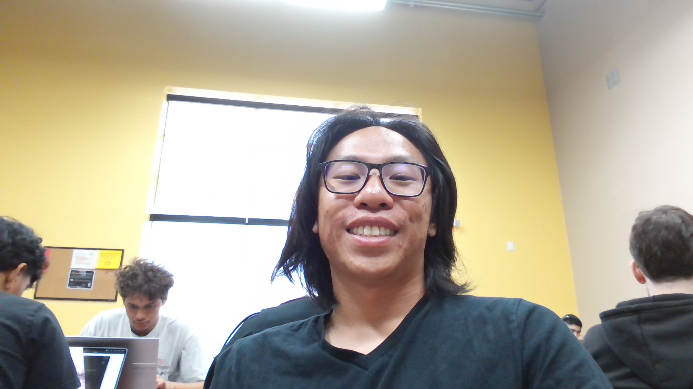

About You With Style
Hello, my name is Andrew Sayasing. I am 24 a year old student currently enrolled in CodeStack Academy. Here is a little about me!

About Me
I am asian
I am a male
I like playing video games
I like to listen to music
I'm a good listener
I'm bad at commitment!
I have zero social media
I like to write
If you where to ask me my top 10 video games, i'd tell you them in this order
- Dragon Age Origins
- Fallout New Vegas
- Monster Hunter World
- Xcom 2
- Halo 3
- Terraria
- Borderlands 2
- Dragon's Dogma Dark Arisen
- Black Ops 2
- Mass Effect 3
If you noticed in my list, I also said I like to listen to music.
I enjoy all sorts and sounds. From Edm to Rap, Heavy Metal into Classical, I listen to it all (not country)
Here Are Some of My Favorite Artist
Taishi (Atmosphere/Trance/Experimental)
Kendrick Lamar (Rap)
Bring Me The Horizon (Metalcore/Rock)
Sakuzyo (Edm/Experimental)
Mili (Dance/Electronic/Classical)
Here are two of my personnal playlist that I listen to
My general playlist
Current favorite artist
Some Goals I have for the next 2 years
Complete this class
Developt my skills in coding
Create a small rpg game
Start some music production
Lift some weights
Get a girlfriend
I always had a creative mind. I'm constantly daydreaming about stories, characters, scenarios.
Being able to create is something I want to be able to achieve. The problem is, i'm lazy and I don't want to put in the work to develop andy skill. To help my kick this bad habit of mine,
I've decided that joining CodeStack is the first step in my journey towards passionate creation!